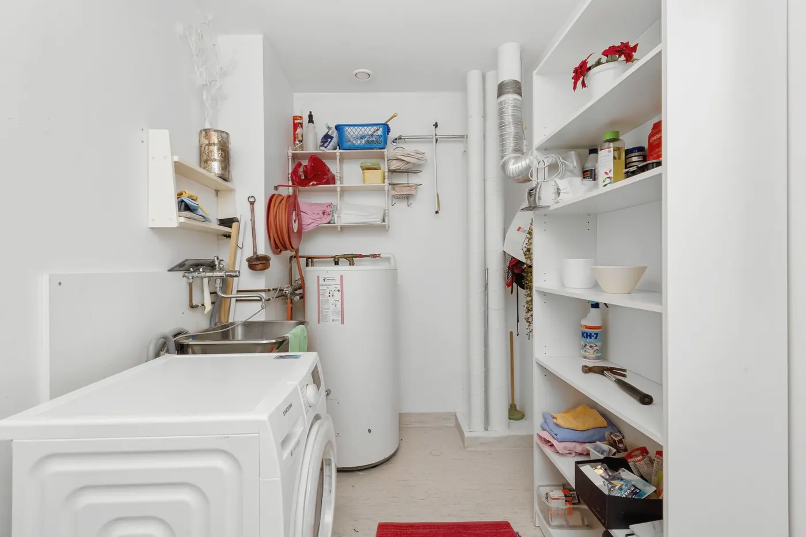
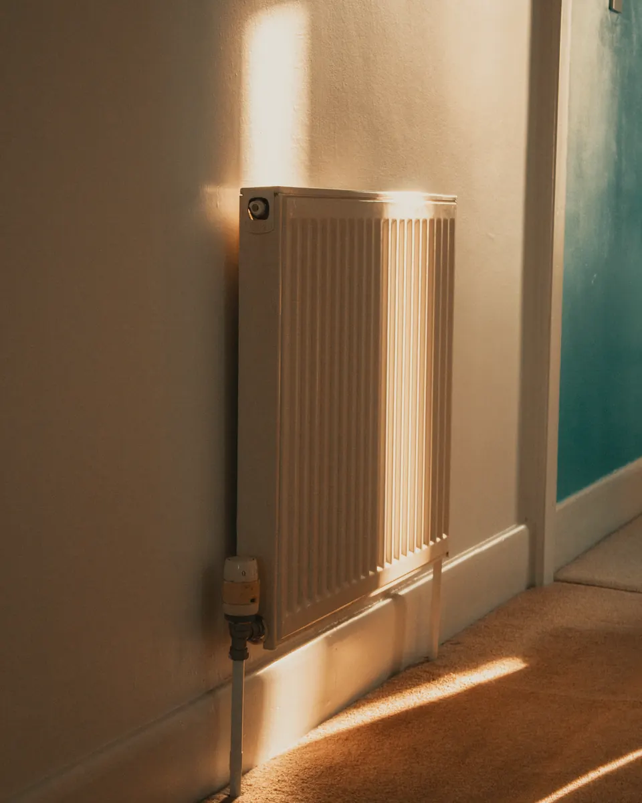

Öljystä ilma-vesilämpöpumppuun.
Kangasalalainen omakotitalo vuodelta 1979. Öljysäiliö lähti, pumppu tuli ja patterit jäivät. Kolme päivää, yksi kylmä yö väliaikaislämmittimillä.
- Paikka
- Kangasala
- Talo
- Omakotitalo 1979, 164 m²
- Ennen
- Öljy, 2 900 l / v
- Nyt
- Ilma-vesilämpöpumppu
- Hinta asennettuna
- 15 200 €
- Kotitalousvähennys
- 2 × 1 220 €
- Lämmitys ennen
- 3 900 € / v
- Arvio nyt
- 1 450 € / v
Miksi ilma-vesi eikä maalämpö
Maalämpö olisi ollut käytöltään edullisempi, mutta tontilla kulkee vesijohto juuri siellä, minne porakaivo olisi mahtunut. Ilma-vesilämpöpumpulla takaisinmaksuaika on omistajien kulutuksella noin viisi vuotta.
Mitä omistajat seuraavat
Sovelluksesta näkyy päivän kulutus ja ulkolämpötila. Tarkistimme kulutuksen etänä ensimmäisen talven ajan ja säädimme lämpökäyrää kahdesti.


Aikajana.
- SyyskuuArviokäynti
Öljykattila vuodelta 1996, kulutus noin 2 900 litraa vuodessa. Patterit riittävän isoja, joten ilma-vesilämpöpumppu sopi ilman lattialämmitystä.
- Lokakuu, pv 1Öljyn pois
Säiliön tyhjennys ja poisto, vanhan kattilan purku. Talossa lämmitys väliaikaislämmittimillä yhden yön.
- Pv 2Pumppu paikalleen
Ulkoyksikkö talon päätyyn, sisäyksikkö entiseen kattilahuoneeseen, putkityöt ja sähköt.
- Pv 3Käyttöönotto
Lämpökäyrä säädettiin pattereille, ja omistajat saivat opastuksen ja sovelluksen.
- TammikuuEnsimmäinen pakkasjakso
Ulkona −24 °C, sisällä 21 °C. Lisävastus oli päällä kahtena yönä.
Arviokäynti on maksuton.
Omakotitalossa katsomme lämmitysjärjestelmän, mittaamme ja laskemme pumpun koon. Taloyhtiössä aloitamme kuntotutkimuksesta ja hankesuunnittelusta.